O faturamento cresce, mas o lucro não aparece
As vendas aumentam, o caixa movimenta e, mesmo assim, a margem continua apertada.
A GDR transforma estratégia em gestão, execução e resultado para construir empresas mais organizadas e lucrativas.


A GDR faz sentido para empresas que já sabem vender, mas ainda convivem com estes problemas na rotina.
As vendas aumentam, o caixa movimenta e, mesmo assim, a margem continua apertada.
Quando você se afasta, decisões atrasam, problemas acumulam e a operação perde ritmo.
As tarefas são feitas, porém as decisões e os problemas sempre voltam para a sua mesa.
Falta clareza sobre caixa, custos, metas e quais ações realmente melhoram o resultado.
Processos, funções e controles não acompanharam o tamanho que a empresa alcançou.
Financeiro, equipe e operação seguem prioridades diferentes, gerando retrabalho e decisões desconectadas.
Se isso se parece com a sua empresa, a GDR ajuda a mostrar onde agir primeiro .
>> Quero saber por onde começar <<Organizamos finanças, processos e time pra empresa parar de depender de você o tempo inteiro.
Estratégia, finanças, processos, pessoas e marketing são analisados em conjunto, porque um problema de gestão raramente está isolado em uma única área.
Quero encontrar os vazamentosO plano só vale quando a equipe sabe o que fazer, o dono enxerga os números e as decisões saem do papel.
Cruzamos caixa, processos e rotina para localizar onde lucro, tempo e controle estão escapando.
Os gargalos viram prioridades claras, com responsáveis, prazos e ordem de execução.
Revemos números, cobramos avanços e ajustamos o plano junto com você e sua equipe.
O trabalho organiza a gestão para que o resultado deixe de depender de esforço, improviso e decisões isoladas.
Caixa, margem, custos e metas passam a mostrar onde o dinheiro é ganho e onde ele escapa.
Os gargalos viram um plano de ação com responsáveis, prazos e ordem clara de execução.
Funções e decisões ficam mais claras para a operação avançar sem tudo voltar ao dono.
Reuniões objetivas mantêm metas, indicadores e ações importantes no centro da rotina.
A empresa ganha estrutura para crescer sem ampliar desperdícios, retrabalho e dependência.
Conheça empresas reais que organizaram a gestão e passaram a crescer com mais clareza, autonomia e controle.
A próxima história de sucesso pode ser a sua, clique no botão.
Quero ter sucessoAbra a versão local correta para assistir sem sair do site.
Abrir versão com vídeosRespostas diretas sobre como a GDR trabalha e o que esperar do processo.
Quero conversar com a GDRPara donos de pequenas e médias empresas que já sabem vender, mas ainda enfrentam caixa confuso, processos frágeis ou dependência excessiva do dono.
Não. A GDR diagnostica, estrutura o plano e acompanha sua execução. Você continua no comando das decisões, com clareza sobre o que fazer e por quê.
Não. A GDR atua sobre gestão. Isso inclui finanças, processos, pessoas, estratégia, marketing, tecnologia, fiscal e operações. Vender mais sem organizar a casa pode aumentar o problema.
A Consultoria Premium pode durar 6, 9 ou 18 meses, conforme o diagnóstico e a necessidade da empresa.
Você preenche o formulário e a equipe analisa as informações antes de entrar em contato. Nessa conversa, entendemos o cenário da empresa e indicamos o formato de trabalho mais adequado.
Conte um pouco sobre a sua empresa. A equipe GDR analisa o cenário antes da conversa para chegar ao ponto mais rápido.
Em até 24 horas, entramos em contato para agendar o pré-diagnóstico. Sem compromisso e sem promessa fácil.